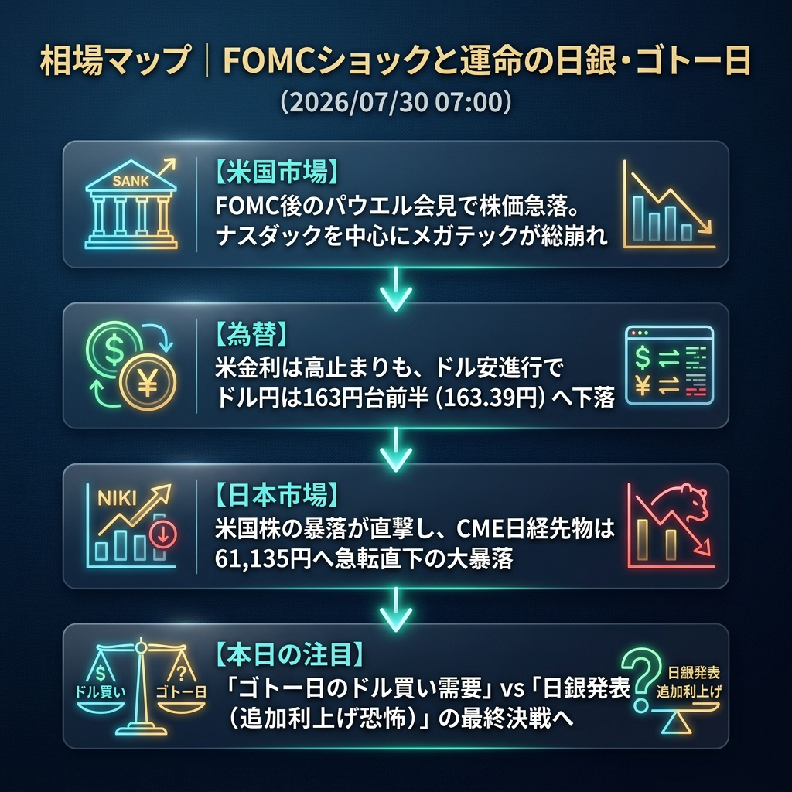

FOMCを無事に通過したかと思いきや、NY市場は一転して株価が急落。ハイテク株を中心に強烈な売りを浴びました。この「米国株ショック」が日本市場を直撃し、昨晩62,600円台まで反発していたCME日経先物は、一気に61,135円まで急転直下の大暴落を見せています。
さらに、本日は「ゴトー日のドル需要」と「日銀会合発表（追加利上げ恐怖）」が重なる最悪のタイミングであり、東京市場は開場直後から極限のボラティリティに見舞われる危険性が高いです。
「FOMC後の米国株急落ショック」と「ゴトー日＆日銀発表の悪魔のコンボ」。
大注目のFOMCを通過し、ドルは主要通貨に対して幅広く売られました。しかし米国株はパウエル議長の会見中やその後に急速にリスクオフへと傾き、ナスダックが大幅安。この「米ハイテク株からの資金流出」がそのまま日本の半導体関連株等への強烈な売り圧力として波及し、夜間取引で日経先物が約1,500円幅も大暴落する事態となっています。
ドル円はドル売りの流れに乗って163.30円台へ下落していますが、金利は高止まりしており、非常にチグハグな動きを見せています。
| 指数・銘柄 | 現在値 | 前回比（前日比） | 騰落率 | 確認事項 |
|---|---|---|---|---|
| S&P 500 (ES=F) | 7,352.50 | -112.0 | -1.50% | FOMC後に急落 |
| Nasdaq (NQ=F) | 27,340.50 | -566.25 | -2.03% | メガテック株が総崩れ |
| Dow (YM=F) | 51,859.0 | -740.0 | -1.41% | 広範な売り圧力 |
| 日経225現物 | 61,434.19 | 0.00 | 0.00% | 前日大引け値 |
| CME日経225先物 | 61,135.0 | -1465.0 | -2.34% | 【大暴落】米国株急落の直撃 |
| USD/JPY | 163.395 | -0.414 | -0.25% | ドル売り優勢で163.30円台へ |
| EUR/USD | 1.1471 | +0.0089 | +0.78% | ユーロ急伸、ドル安鮮明 |
| 金 | 4,132.6 | +52.3 | +1.28% | ドル安を好感し大幅高 |
| 原油 | 84.39 | +0.23 | +0.27% | 高値圏を維持 |
| BTCUSD | 63,947.73 | -283.82 | -0.44% | 株安に連れ安も比較的底堅い |
いよいよ本日は日銀の政策決定会合の結果が発表されます（昼前後）。市場の焦点は「追加利上げ」と「国債買い入れ減額の規模」に完全に絞られており、発表前後は凄まじい乱高下が予想されます。
さらに、本日は**「30日＝ゴトー日」**です。仲値（09:55）に向けて輸入企業からのドル買いが入りやすく、ドル円が163円台後半へ押し上げられる可能性があります。この「ゴトー日需要」と「日銀待ちの不気味な静けさ」が交錯し、午前中から相場がクラッシュするリスクに最大限の警戒が必要です。
日銀が「利上げ見送り」かつ「減額ペースも極めて緩やか」という完全なハト派サプライズを出した場合。その瞬間、日経平均は悪材料出尽くしとショートカバーで2,000円近い大暴騰を見せ、ドル円は介入警戒水準の164円をあっけなく突破するシナリオとなります。